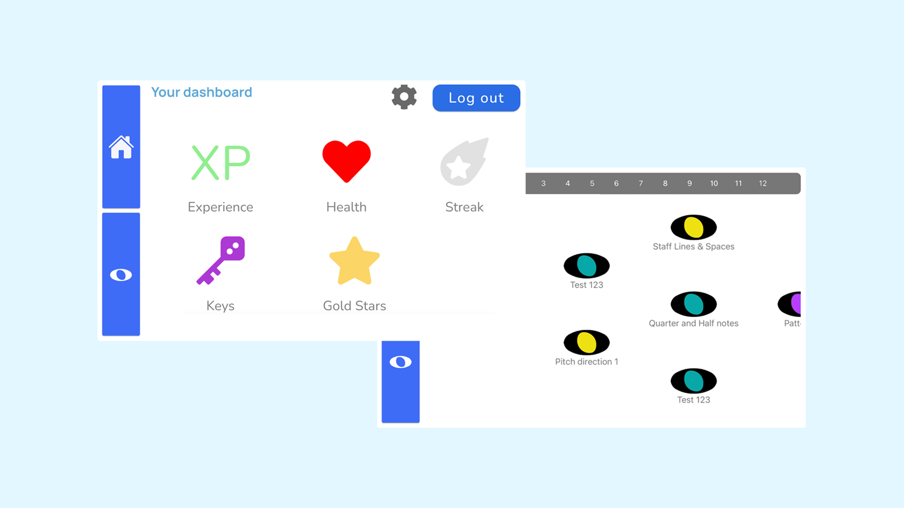
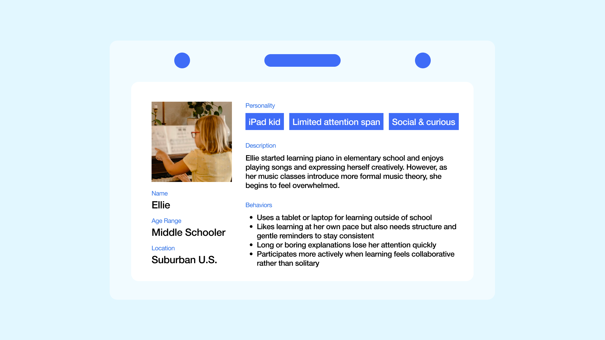
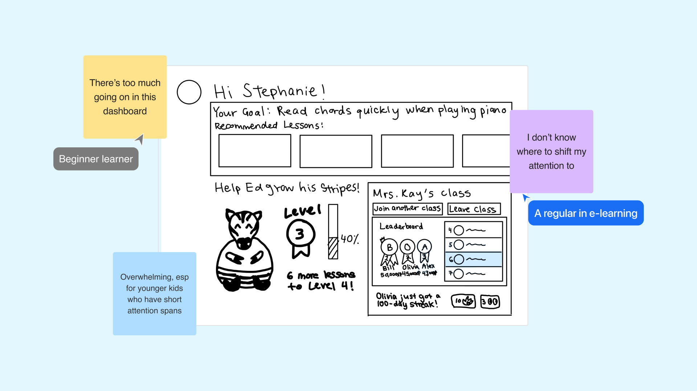
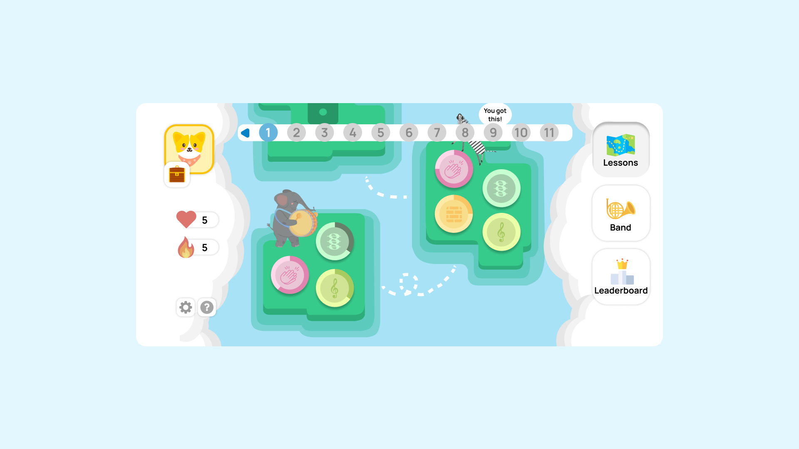
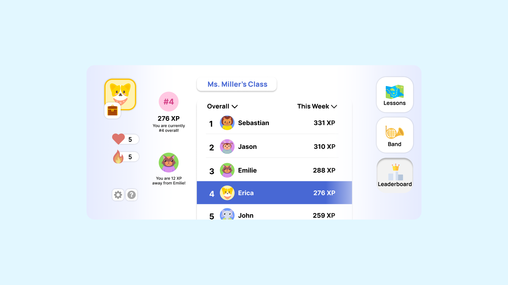
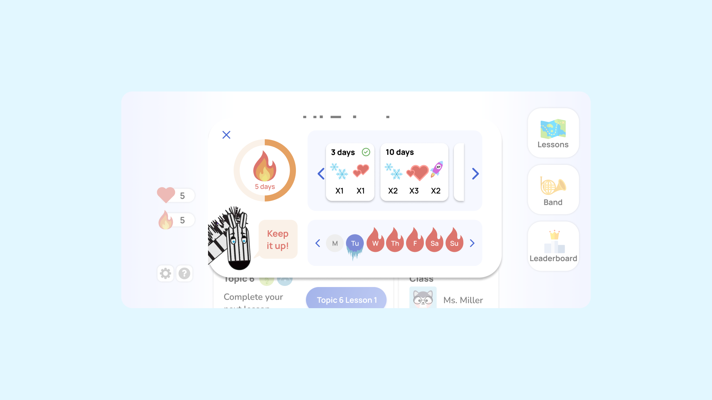
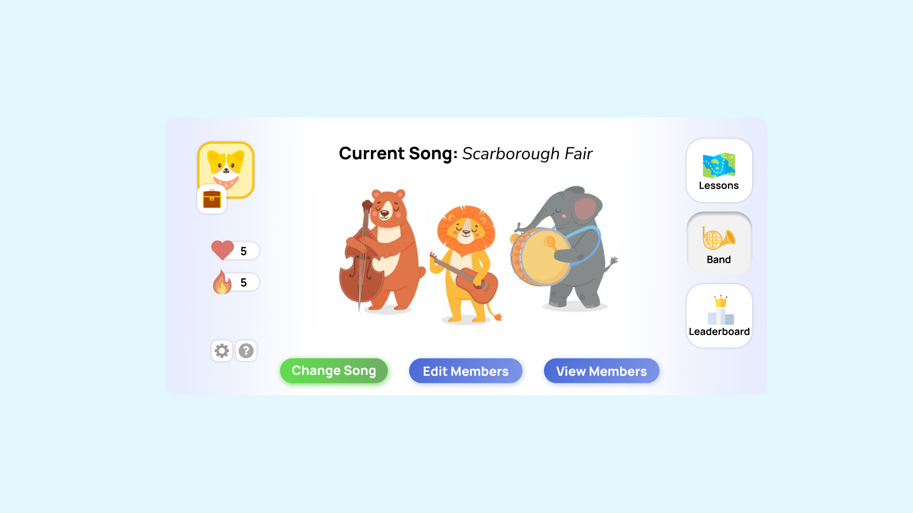
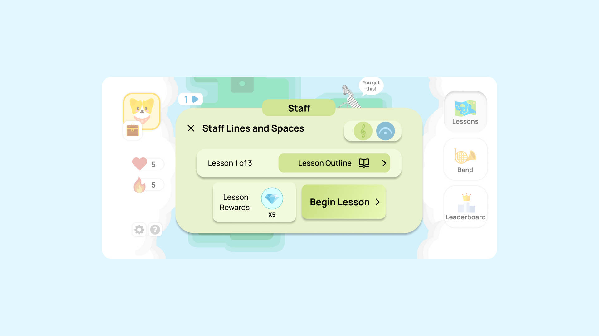
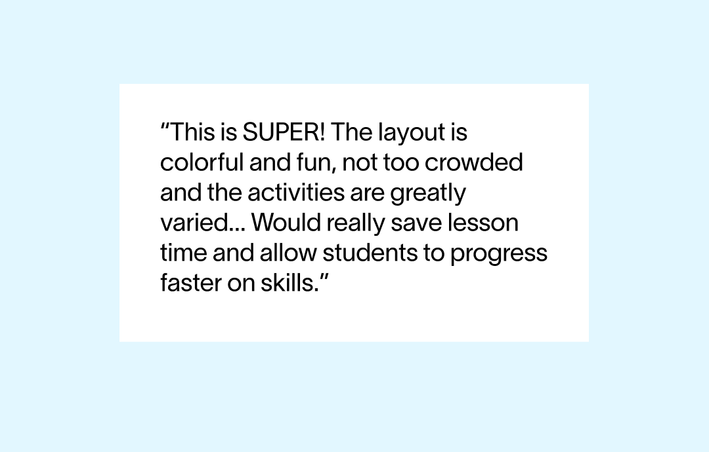

Noteful, Redesigning an E-Learning Journey
Despite being a foundation for music, music theory is often viewed as boring or abstract, especially amongst younger audiences. That’s where Noteful comes in: a startup aiming to make music theory fun. In this project, my team and I tackle the redesign of Noteful's experience and interface for an engaging, long-term learning journey through gamification.
Design an engaging dashboard to keep students motivated long-term.
For my senior HCI capstone project, my team partnered with Noteful. When we first got onboarded to this project, they requested for a revamp of their beta student dashboard to get ready for their offical launch, working mostly on UI improvements that would appeal to their audience of young kids.
So... why was the app needed in the first place?
Since this is also completed as a capstone project, time had to be dedicated to research. Before starting the redesign, I brainstormed and executed with my team 3 different forms of research to gather more insights and familiarize ourselves with the music theory e-learning scene, including:
Literature Review
of what is relevant to extrinsic/intrinsic motivation and e-learning.
Competitive Analysis
of popular e-learning apps, some specific to music, currently on the market.
User Interviews
with long-term music theory learners to hear firsthand experiences.
For young learners, traditional music theory learning comes off as monotonous and unengaging.
Music theory is often taught alongside instruments like the piano, but unlike playing music, theory can feel monotonous and disconnected. Traditional worksheets and apps aren’t designed with kids in mind, leaving young learners wanting something more fun, and shared with friends.
How can Noteful come fill in gaps in the music theory learning space?
Brainstorming Jam
Our team first brainstormed together on how Noteful could improve student engagement through a dashboard, grounding our ideas on the concepts of intrinsic and extrinsic motivation through gamification.
Speed-dating with Storyboards
We then tested the ideas through storyboards. For example, this storyboard was one that was particularly well-received, informing us to create some sort of competition within the Noteful community.
Testing a feature's presentation and its perceived effectiveness.
I next suggested we sketched feature ideas, highlighting how presentation affects effectiveness. Afterwards, we ran quick interviews for feedback on layout, navigation, and visuals. However, certain feedback had me reconsider the project goal we received, which was to redesign their student dashboard.
With more user feedback, I started questioning: would a dashboard redesign be sufficient for an effective learning experience?
- As evident from the feedback above and UI considerations, a dashboard will be too cluttered to support effective learning.
- After learning how current apps don't cater to younger audiences, we could stand out from competitors and strengthen brand identity.
- And just thinking the big picture, a complete experience offers a more interactive and engaging environment.
After presenting our rationale with Noteful, we aligned everyone on the team and shifted our focus from dashboard design to better meet user needs, updating our problem statement accordingly:
A fun and engaging music learning journey through gamification.
Fun and free for everyone, Noteful breaks the mold of traditional music education. It combines gamification with a user-friendly interface, ensuring that learners of all ages can grasp complex concepts in a simple and entertaining way.
    How can we measure the success of our new design for Noteful's official launch?
While the scope of our project didn't include handoff and QA, we detailed our design process and work through various artifacts, including a prototype, implementation demo, final presentation, and report. I also thought of some metrics we could track post-launch:
Adoption & Reach
Number of new users captured in the first X weeks within launch
Consistent Learning
More than X% amount of students achieve a month long streak.
Teacher Usage Rate
Positive feedback and adoption from music teachers to use in their lesson outlines.
Good design should be approached with intention and impact.
This project taught me that the best solutions come from being intentional, taking the time to think about which features truly matter and which don’t. I’ve come to see design as a balancing act: it only works when impact, clarity, and practical constraints like time and resources all align 🧘♀️
